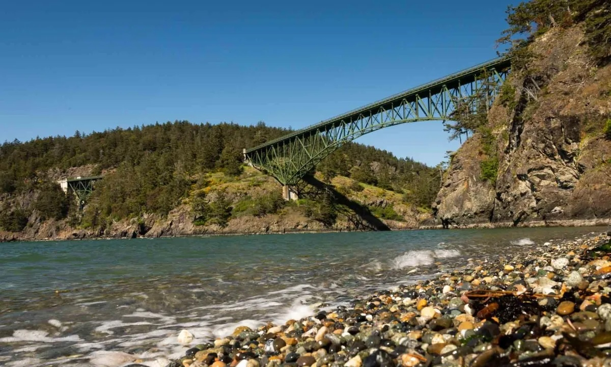
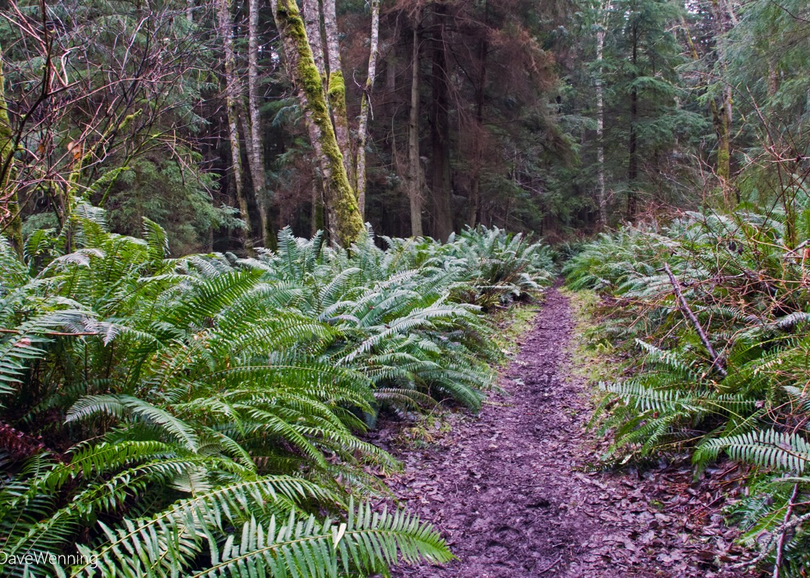

Saltwater anglers flock to Deception Pass from mid-summer through early autumn in pursuit of salmon. Along the coastline, the most popular areas to fish are North Beach and West Beach. While West Beach has easy access, it’s also more crowded and exposed to the westerly winds.
Accessing North Beach requires a short hike, but that doesn’t stop salmon enthusiasts from lining the shore from the North Beach Amphitheater to the Deception Pass Bridge during peak season.
Coho salmon are the main annual draw, but lingcod, shrimp, smelt, herring, and crab also are abundant in these waters. The inland lakes such as Pass and Cranberry also offer great freshwater fishing. Fishing licenses are required.
Beach Exploration

Surrounding beaches offer a variety of rocks, seaglass, and driftwood for combing.
Popular beaches include:
North Beach
Rosario Beach
Bowman Bay
West Point
With thousands of miles of shoreline, exploring the tide pools and learning about the area’s sea life is one of the park’s biggest draws.
During the summer, visitors can register for guided tide pool tours to discover the magic of low tide. Or explore the Rosario Tide Pools at your own pace (just be sure to follow the yellow rope trail and not remove any critters).
Hiking

Desception Pass state park offers hundreds of acres of hiking trails.
Some good trails nearby include:
Lighthouse Point and Lottie Point via Rosario Head Trail
Rosario Head Trail
Goose Rock Trail
North Beach Trail
Deception Pass Bridge and Beach Trail
Hoypus Point Loop
More about hiking:
Looking for more information on these hiking trails? Here are the top 10 best trails in Deception Pass State Park as rated by AllTrails.